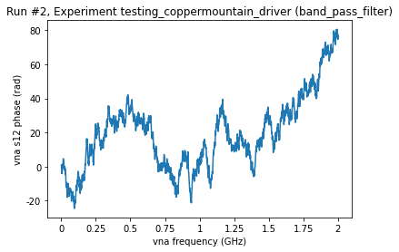

Example with CopperMountain Model M5180 vector network analyzer¶
[ ]:
import qcodes as qc
from qcodes.station import Station
from qcodes.dataset import load_or_create_experiment, initialise_database, Measurement
from qcodes.dataset import plot_by_id
from qcodes.dataset import do1d
Logging hadn't been started.
Activating auto-logging. Current session state plus future input saved.
Filename : C:\Users\G-GRE-GRE058050\.qcodes\logs\command_history.log
Mode : append
Output logging : True
Raw input log : False
Timestamping : True
State : active
Qcodes Logfile : C:\Users\G-GRE-GRE058050\.qcodes\logs\210330-113772-qcodes.log
[2]:
from qcodes_contrib_drivers.drivers.CopperMountain.M5180 import M5180
Connecting to device¶
Install connection software S2VN, download here: https://coppermountaintech.com/download-free-vna-software-and-documentation/
Run the software and go to System > Misc Setup > Network Remote Control Settings and turn on HiSLIP Server
[3]:
vna = M5180(name='vna', address='TCPIP0::localhost::hislip0::INSTR')
Connected to: CMT M5180 (serial:20107935, firmware:20.3.3/1) in 0.09s
[4]:
# Let's look at all parameters
vna.print_readable_snapshot(update=True)
vna:
parameter value
--------------------------------------------------------------------------------
IDN : {'vendor': 'CMT', 'model': 'M5180', 'serial': '201...
averages : 1
averages_enabled : True
averages_trigger_enabled : True
center : 1.0005e+09 (Hz)
data_transfer_format : ASC
if_bandwidth : 10000 (Hz)
nb_traces : 4
npts : 2001
output : True
point_s11 : Not available (('dB', 'rad'))
point_s12 : Not available (('dB', 'rad'))
point_s21 : Not available (('dB', 'rad'))
point_s22 : Not available (('dB', 'rad'))
power : -20 (dBm)
s11 : Not available (('dB', 'rad'))
s12 : Not available (('dB', 'rad'))
s21 : Not available (('dB', 'rad'))
s22 : Not available (('dB', 'rad'))
span : 1.999e+09 (Hz)
start : 1e+06 (Hz)
stop : 2e+09 (Hz)
timeout : 1e+05 (s)
trigger_source : bus
Setup db and station for test measurerment¶
[5]:
# create an empty database based on the config file
qc.initialise_or_create_database_at('./test_copper_mountain.db')
[6]:
exp = load_or_create_experiment(experiment_name='testing_coppermountain_driver',
sample_name="band_pass_filter")
[7]:
station = qc.Station(vna)
Measure a trace¶
[8]:
# Turn on the RF output
vna.output('on')
[9]:
# define sweep parameters
vna.power(-20)
vna.start(1e6)
vna.stop(2e9)
vna.if_bandwidth(10e3)
vna.npts(2001)
vna.averages(1)
# do measurement
meas = Measurement()
meas.register_parameter(vna.s12)
with meas.run() as datasaver:
datasaver.add_result((vna.s12, vna.s12()))
ax, cbax = plot_by_id(datasaver.run_id)
Starting experimental run with id: 2.


[10]:
# Similarly, other S-paramters can be queried
vna.s11()
[10]:
(array([-0.0477012 , -0.09391321, -0.17265479, ..., -0.03038562,
-0.03399903, -0.0214076 ]),
array([-0.01097229, -0.01708669, -0.01996385, ..., -3.17442979,
-3.17352842, -3.17585808]))
[11]:
vna.s12()
[11]:
(array([-64.03521817, -72.72068274, -74.92402692, ..., -77.23523101,
-77.87500527, -86.19919018]),
array([ -1.46406748, -3.23681928, -2.86312445, ..., -47.37145838,
-48.20720528, -45.34542698]))
[12]:
vna.s21()
[12]:
(array([-77.09130151, -72.57583366, -74.71111513, ..., -69.62992638,
-86.6484703 , -72.85211098]),
array([-1.80363488, -0.96240925, -0.83102692, ..., 32.98620611,
34.25529117, 36.06598604]))
[13]:
vna.s22()
[13]:
(array([ 0.00305115, -0.06177799, -0.15385378, ..., -0.02385243,
-0.02926526, -0.02279546]),
array([-0.01547223, -0.02163175, -0.02391645, ..., -3.18152415,
-3.18361572, -3.18402174]))
[14]:
# or all S-parameters at once. Attention this is not a qcodes parameter
vna.get_s()
[14]:
(array([1.0000000e+06, 1.9995000e+06, 2.9990000e+06, ..., 1.9980010e+09,
1.9990005e+09, 2.0000000e+09]),
array([-0.03160302, -0.10392121, -0.17598948, ..., -0.02083835,
-0.02544277, -0.02948864]),
array([-0.01215209, -0.01844561, -0.01988006, ..., 3.11017192,
3.10721224, 3.10526495]),
array([-68.03181706, -69.96986101, -84.366874 , ..., -70.94278538,
-79.11469549, -77.38634014]),
array([ 2.24117547, 2.60915241, 0.78312326, ..., -2.20522653,
-2.38599278, -1.49447507]),
array([-83.2538078 , -67.23946765, -73.17241871, ..., -75.89235284,
-80.80017483, -81.72715481]),
array([ 3.1331486 , 2.56154342, -0.36192594, ..., 0.23860211,
-1.37759455, 2.75163547]),
array([ 0.00655536, -0.06872062, -0.14529468, ..., -0.02987041,
-0.01884765, -0.02839042]),
array([-0.01384824, -0.02119365, -0.02357165, ..., 3.10193855,
3.10032872, 3.09917688]))
Look at the names and the labels of the Sxx parameters¶
[15]:
vna.s11.labels
[15]:
('vna s11 magnitude', 'vna s11 phase')
[16]:
vna.s11.names
[16]:
('vna_s11_magnitude', 'vna_s11_phase')
[17]:
vna.s11.setpoint_labels
[17]:
(('vna frequency',), ('vna frequency',))
[18]:
vna.s11.setpoint_names
[18]:
(('vna_frequency',), ('vna_frequency',))